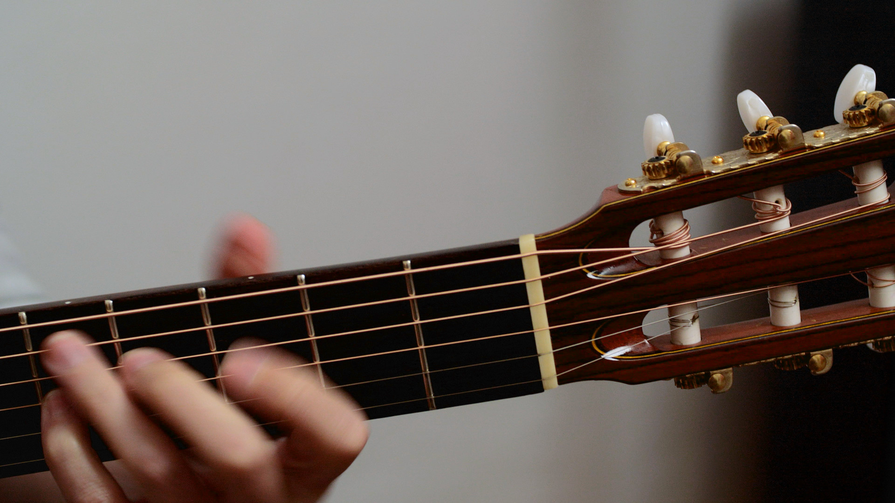
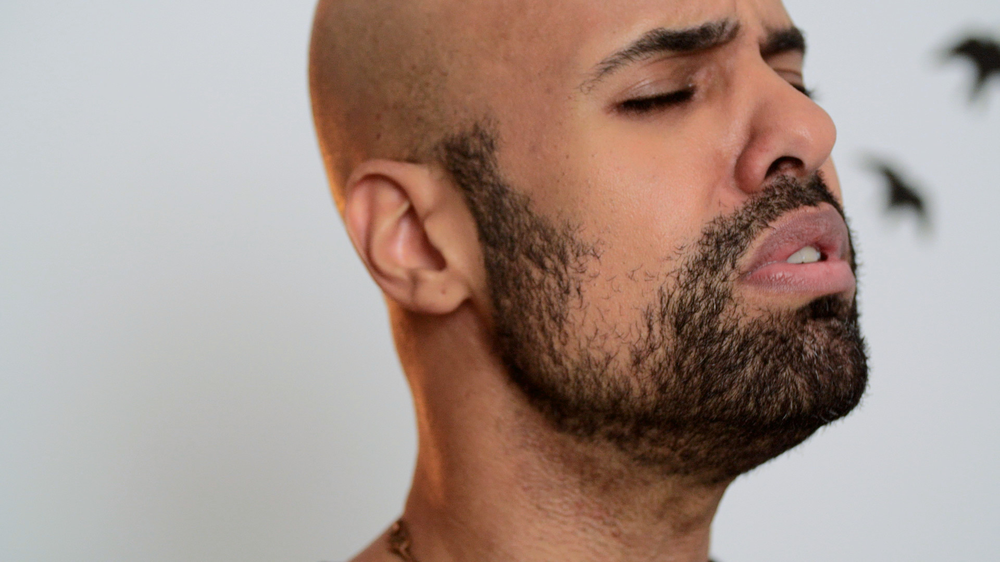
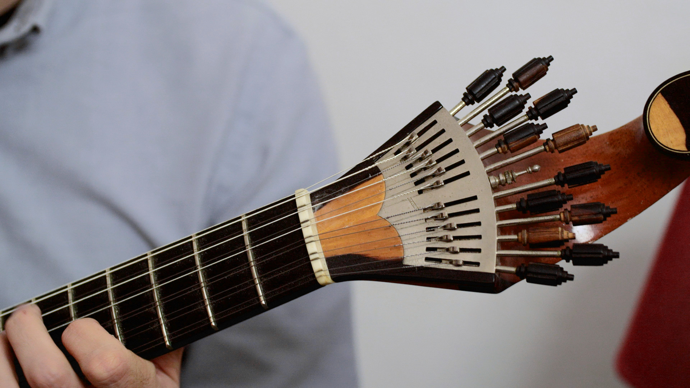
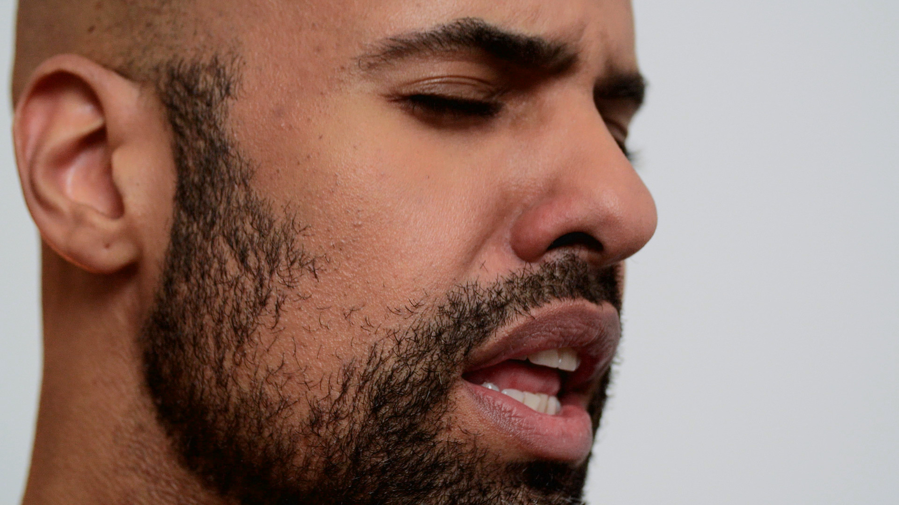
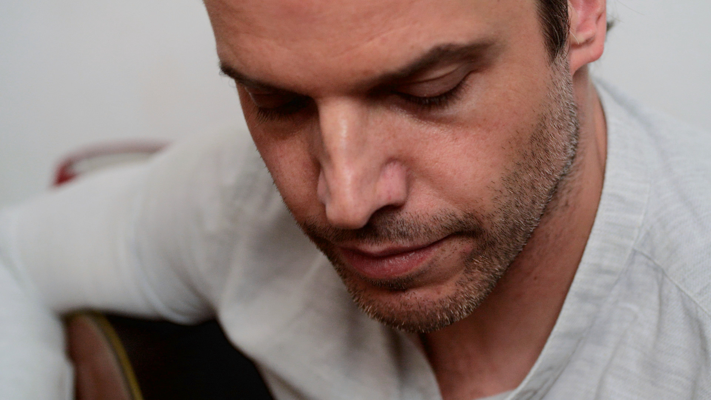
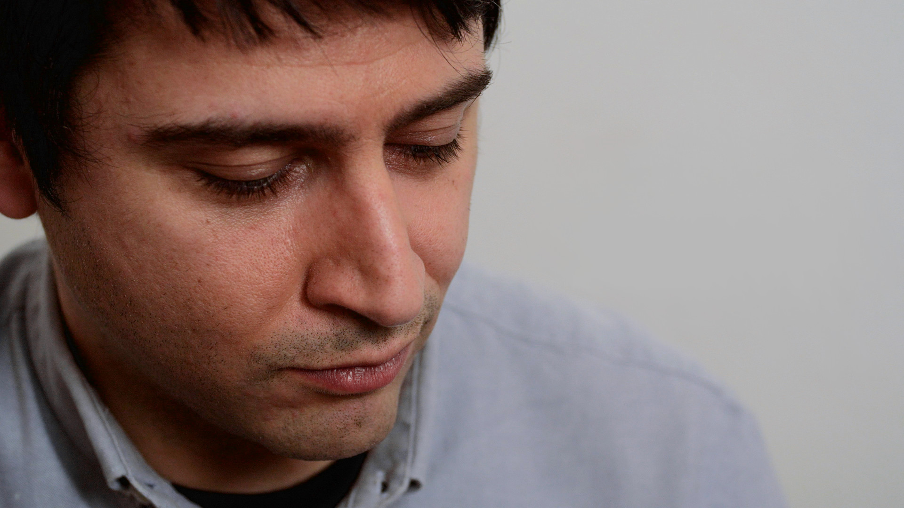

Camera work
David Gonçalves - Janela Pobre
Gravação do tema "Janela Pobre" interpretado por David Gonçalves,
acompanhado por António Duarte Martins e Pedro Dias (guitarra portuguesa),
Ricardo Caixado e Pedro Martins (guitarra clássica).
João Penedo (viola baixo)
Gravado em Lisboa.
Adriano Luís Pina - Rosário de fados (Studio Session)
Gravação do tema "Rosário de fados" interpretado por Adriana Luís Pina,
acompanhado por Pedro Dias (guitarra portuguesa) e Pedro Martins (viola).
Gravado no estúdio Ponto Zurca, masterizado por Benoit Depriester.
Ministerium - 31.7.22
Hélio & Tiago (Pandilla LTD) and Manuel Cotta
performing at Ministerium Club, Lisboa, on July 31, 2022.
Percebes - Sonar Lisboa 2022
Lisbon-based label Percebes performing at Sonar.
With DJ Ka§par, Helder Russo, Sheri Vari, Daino.
Shot at Pavilhão Carlos Lopes, Lisboa on April 9, 2022.
Larry Quest - Wave Ring
Shot at Collect, Lisboa in July 2021.
A live DJ set by Larry Quest, playing "Wave Ring".
Label: Pleasure of Love, LA






Ryan Green, ensaios
Shot in Alfama, Lisboa in November 2020.
Stills from a live session with musicians André Silva & Carlos Viçoso.
Uma tarde na Baiuca
Shot passing by at Baiuca de Alfama, Lisboa, on August 2020.
With Múcio Sá, José Simões, José Matoso, Lúcia Mourinho, João Pombinho,
Salomé Machado, Manuel Carlos Gonçalves, Carlos Alberto Ferreira.